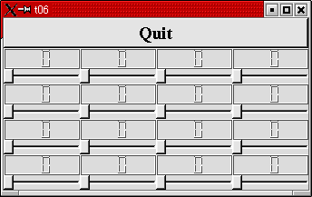
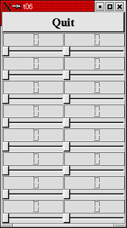
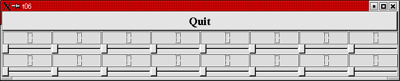
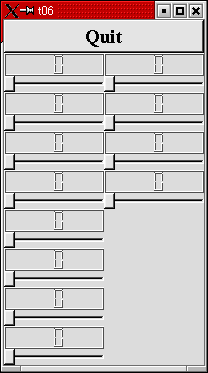

トップページ＞＞＞
「ぷろぐらみんぐ」目次＞＞＞
「Qt Tutorial Index Page」
Chapter 6: Building Blocks Galore!
初版作成：2002/01/01
- ソースコード
- 解説
- コンパイル・動作確認
- いじくりまわす

一体全体、正月早々何やってんだこの俺は・・・。
まあ良い。始めましょう、Chapter6を。
今回の例ではウィジェットを複数生成する方法を例示します。
とりあえず最初に、複数生成するウィジェットをQVBoxからの派生によって定義しておきます。
次に QGrid という升目状に自動配置してくれるウィジェットに、上で定義しておいた単位ウィジェットを
突っ込んでいきます。
まあ・・・比較するものがないんで何ともいえないんですが・・・多分、BCBやDelphiよりは簡単なんじゃ、ないかなー、
と。特にQGridによる自動配置のおかげで、新しいウィジェットの位置を計算する手間が省けますし。
とにかく、冒頭に示した画面が実行結果になります。前回の続き物で、QLCDNumberとQSliderをQVBoxに突っ込んだものが
単位ウィジェットになりまして、それがずらりとQGridに並べられるわけです。
それではソースコードです。
#include <qapplication.h>
#include <qpushbutton.h>
#include <qslider.h>
#include <qlcdnumber.h>
#include <qfont.h>
#include <qvbox.h>
#include <qgrid.h>
class LCDRange : public QVBox
{
public:
LCDRange(QWidget *parent=0, const char *name=0);
};
LCDRange::LCDRange(QWidget *parent, const char *name)
: QVBox(parent, name)
{
QLCDNumber *lcd = new QLCDNumber(2, this, "lcd");
QSlider *slider = new QSlider(Horizontal, this, "slider");
slider->setRange(0, 99);
slider->setValue(0);
connect(slider, SIGNAL(valueChanged(int)), lcd, SLOT(display(int)));
}
class MyWidget : public QVBox
{
public:
MyWidget(QWidget *parent=0, const char *name=0);
};
MyWidget::MyWidget(QWidget *parent, const char *name)
: QVBox(parent, name)
{
QPushButton *quit = new QPushButton("Quit", this, "quit");
quit->setFont(QFont("Times", 18, QFont::Bold));
connect(quit, SIGNAL(clicked()), qApp, SLOT(quit()));
QGrid *grid = new QGrid(4, this);
for(int c=0; c<4; c++)
for(int r=0; r<4; r++)
(void)new LCDRange(grid);
}
int main(int argc, char **argv)
{
QApplication a(argc, argv);
MyWidget w;
a.setMainWidget(&w);
w.show();
return a.exec();
}
目次に戻る
ほんじゃあポイントごとに解説していきます。
つっても・・・今までさんざっぱら「いじくりまわす」でいろいろ実験してきましたし。そんなに目新しかったり重要なポイント
は無いです。
まあ、とにかく始めます。
class LCDRange : public QVBox
{
public:
LCDRange( QWidget *parent=0, const char *name=0 );
};
LCDRangeウィジェットにはAPIを実装していません。コンストラクタだけです。このようなウィジェットは実際問題としては
役立たずに近いので作りません。今回はあくまでも例示です。後に続くChapterでいろいろ変更を加えていくことになると思い
ます。
LCDRange::LCDRange( QWidget *parent, const char *name )
: QVBox( parent, name )
{
QLCDNumber *lcd = new QLCDNumber( 2, this, "lcd" );
QSlider * slider = new QSlider( Horizontal, this, "slider" );
slider->setRange( 0, 99 );
slider->setValue( 0 );
connect( slider, SIGNAL(valueChanged(int)), lcd, SLOT(display(int)) );
}
これはほとんど前回のMyWidgetです。Quitボタンが除かれたのと、クラス名が変わっていることくらいです。
class MyWidget : public QVBox
{
public:
MyWidget(QWidget *parent=0, const char *name=0);
};
MyWidgetもコンストラクタ以外には何のAPIも実装していません。このMyWidgetがQuitボタンと、QGridを突っ込む母体と
なります。
MyWidget::MyWidget(QWidget *parent, const char *name)
: QVBox(parent, name)
{
QPushButton *quit = new QPushButton("Quit", this, "quit");
quit->setFont(QFont("Times", 18, QFont::Bold));
connect(quit, SIGNAL(clicked()), qApp, SLOT(quit()));
コンストラクタです。Quitボタンをまず突っ込んでます。
QGrid *grid = new QGrid(4, this);
次に QGrid レイアウトウィジェット（と言っていいのかな？）を張り付けてます。
QGrid ウィジェットは升目状に配置、というよりは「とりあえず一方向に並べていって、指定数並べたら折り返してまた並べて。」
といった感じで、どちらかというを自動折り返し機構のついた QHBox や QVBox みたいな？
したがってQGridのコンストラクタは次のようになっています。
QGrid::QGrid ( int n, QWidget * parent=0, const char * name=0, WFlags f=0 )
Constructs a grid widget with parent parent and name name. n specifies the number of columns.
QGrid::QGrid ( int n, Direction dir, QWidget * parent=0, const char * name=0, WFlags f=0 )
Constructs a grid widget with parent parent and name name. If dir is Horizontal,
n specifies the number of columns. If dir is Vertical, n specifies the number of rows.
このように引数を変えて二種類のコンストラクタをとれるようにしていました。違うのは Direction dir のあるなしです。
Directionというのは
enum Direction { Horizontal, Vertical }
としてQGridで宣言されている列挙型です。よーするに水平方向にならべていくのか、垂直方向に並べていくのかの差です。
どちらを指定するかによって最初の引数 n の持つ意味が変わります。
Direction 無し、あるいは Horizontal の時は n は列数（Column）を指示します。つまりQHBoxの延長になります。
Direction に Vertical が指示されていると n は行数（Row）を指示します。つまりQVBoxの延長になります。
for(int c=0; c<4; c++)
for(int r=0; r<4; r++)
(void)new LCDRange(grid);
四列を一行として、四行分 LCDRange を並べてます。
これでポイント部分の解説はおしまいです。
目次に戻る
んじゃあ、コンパイルしてみましょう。
[fenjin@murasame t06]$ vi t06.cpp
[fenjin@murasame t06]$ progen -n t06 -o t06.pro
[fenjin@murasame t06]$ tmake -o Makefile t06.pro
[fenjin@murasame t06]$ make
g++ -c -pipe -Wall -W -O2 -DNO_DEBUG -I/usr/lib/qt/include -o t06.o t06.cpp
g++ -o t06 t06.o -L/usr/lib/qt/lib -L/usr/X11R6/lib -lqt -lXext -lX11 -lm
[fenjin@murasame t06]$ ls
Makefile t06* t06.cpp t06.o t06.pro
んで、実行ファイル t06 を実行すると冒頭に示したようなウインドウが表示されるわけです。上部のQuitボタンをクリック
するとアプリケーションは終了します。
目次に戻る
まあ今回はあんまり凝るようなところも凝りたくなるようなところも私的には無かったので。
QGridの配置実験でもして遊びましょう。
とりあえず、QLCDRangeは4x4の16個生成しています。
ここでQGridのコンストラクタで n=2 としてみると、２列×８行で表示されることが予想されます。
実験結果です。予想通りでした。

んじゃあ n=8 としてみましょう。８列×２行で表示されることが予想されます。
実験結果です。予想通りでした。

それでは、Directionを指定してみましょう。コンストラクタの n の指定の後に「QGrid::Vertical」を追加します。
n=8 としておきます。これにより n は行数を指示するようになりますから、結局前回と同じく８行×２列で表示されることに
なるはずです。
しかし前回と同じでは味気ないので、for文で内側ロープを3とかにしてみましょう。４×３で１２個のLCDRangeが表示される
はずです。しかし実際は８行ならんでから折り返しますので、予想としては「左半分が８行×１列、右半分で４行×１列。空いた
部分は普通に空白処理」といったところでしょうか・・・。

予想通りになりました。
今回は遊べるところはこれくらいでしょう。QGridの使い方さえわかれば、ちゃっちゃと次のChapterに進んじゃってもいいかな、
と思われます。
目次に戻る
トップページ＞＞＞
「ぷろぐらみんぐ」目次＞＞＞
「Qt Tutorial Index Page」